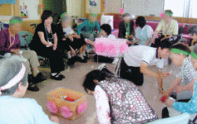
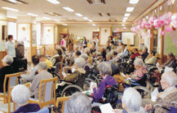
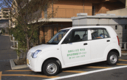

トップページ ＞ フロリール調布・訪問看護
当施設は調布病院の３階全フロアーを療養室として８０名までの入所利用が出来るようになっております。又、５階フロアーで月曜日から土曜日まで毎日２０名までの利用者の方々が通所リハビリテーションに通っております。
介護福祉士・看護師・理学療法士・作業療法士他に加え、外部講師やボランティアの方の協力も得て、音楽療法・体操・歌唱・書道・詩吟・句作・朗読会・各種手工芸・参加型ゲーム・映画鑑賞・生け花などの日々のサークル活動を行い季節を感じとる生活を送っております。
さらに誕生会・節分会・ひな祭り・外食会・買い物ツアーなどのイベントを企画し、日常生活にアクセントを心掛け、楽しく過ごして頂いております。
併設している調布病院との連携も緊密で、随時医療対応も行える体制となっております。
他施設や外部医療機関とも協力し合い利用し易い施設として、環境整備や運営に努めております。職員全員が心して利用者の方々に満足して頂ける施設を目指しております。
 
平成１１年より在宅生活を安全・安楽に過ごせる様に、又、家族の介護負担の軽減が出来る様、介護保険による介護・リハビリを提供しております。
利用者様がなるべく在宅生活ができるよう、看護師、理学療法士が親身になって取り組んでおります。
在宅生活でお困りでしたら、お住まいの地域包括支援センターにお問い合わせ下さい。ご入院中の方は、ご入院先の相談員にお尋ね下さい。また、当ステーションでも何なりとご相談を承っております。